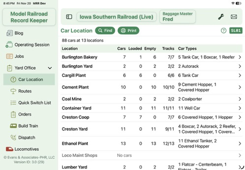
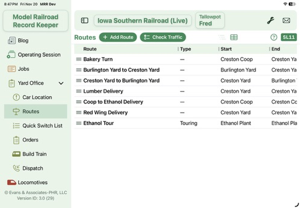
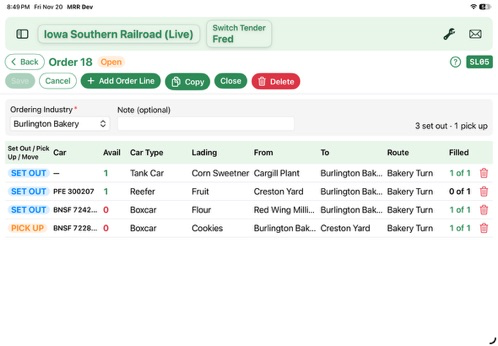
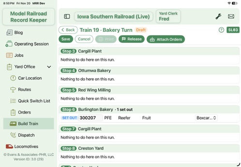
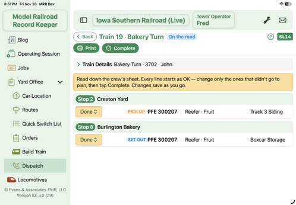

Switch lists that keep track of your cars
Version 3.0 of Model Railroad Record Keeper adds the Yard Office, a new section in the sidebar for running operating sessions with switch lists. You can build a full train from routes and industry orders, or put together a quick list of cars to shuffle. Either way, you print a switch list, the crew works it, and the app records where every car ended up.
Start with Car Location

Everything in the Yard Office depends on knowing where each car is. Car Location lets you put cars on a location and track, either one at a time or by ticking a batch and placing them all at once. Cars you haven't placed yet show as Not placed. Once your cars are placed, Where's That Car? finds any car by number, reporting marks, type or where it's sitting.
Switch list one: a train built from orders
This is the full operations approach, for when you want industries to drive the traffic.
- Routes describe a train's run once: where it starts, its stops in order, where it ends, and its locos. Group routes by type and drag them into whatever order suits you.

- Orders are your industries asking for the cars they need. An industry can fill its order straight from its Traffic tab, using the shipping and receiving you've already set up.

- Build Train brings the two together. Pick a route, attach the orders it will serve, print the switch list and release the train.

Switch list two: the Quick Switch List
Sometimes you just want the crew to shift a few cars. A Quick Switch List is a name, a loco, a crew and a list of cars, each going from where it sits now to wherever you pick. There are no routes or orders to set up. Add cars with the same search Where's That Car? uses, and drag them into the order the crew should work them. Print it and run it as is, or pick it on Build Train to run it as a train.
Finished lists are kept as history. When you want to run the same moves again, Run Again starts a fresh copy that begins from where each car sits now.
Dispatch: Done, Not Done, and what really happened

The printed list gives every line two boxes, Done and Not Done, and a space for the crew to write what happened. Back at the app, every line starts as Done. You only touch the ones that didn't go to plan: car not found, swapped for another car, bad order or no room. For those, you record where the car ended up.
Then choose Complete. The app updates every car's location to where it ended up. A car nobody could find is marked Location unknown, so you know to go looking. If a car was swapped, the car that actually went gets the new location. Your next session starts from the layout as it really is.